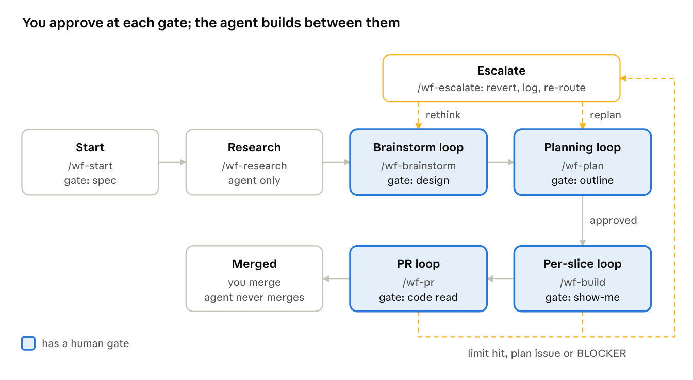

Last updated: 2026-11-20
1. What this is
This guide explains how to run software features and bug fixes
through a staged, agent-assisted workflow in Cursor. A kit of skills,
subagents, a hook and templates lives in your repo; you drive it with
/wf-* commands. Every work item leaves a trail of short Markdown files
in .workflow/<YYYY-MM-DD>-<slug>/. The aim is
to let the agent do the building while you keep control of what gets
built and what gets merged.
Principle: manual where you think, agentic where it builds.
| Who | Owns | In practice |
|---|---|---|
| You | The what | Spec, design, outline, final code read |
| Agent | The how | Research, implement, test, self-review |
| Tests | Done | A slice is done when its locked tests pass |
2. The workflow at a glance
A feature runs through seven stages; you hold the gates, the agent does the work between them.

Feature track · 7 stages, 2 escalation routes
Work flows left to right, then down into the build; a hit limit, plan issue or BLOCKER goes to Escalate, which routes back to brainstorm (rethink) or plan (replan).
| # | Stage | Command | Owner | Input | Output artifact | Gate |
|---|---|---|---|---|---|---|
| 1 | Start | /wf-start |
You (agent drafts questions) | Your request or bug report | spec.md (or bug-report.md),
questions.md, .workflow/active.env |
Track chosen, spec agreed |
| 2 | Research | /wf-research |
Agent (researcher subagent) | questions.md only |
research.md (facts, file:line refs, no opinions) |
None |
| 3 | Brainstorm loop | /wf-brainstorm |
You + agent | spec, research | design.md (~200 lines) |
You approve design |
| 4 | Planning loop | /wf-plan |
Agent drafts, you approve | design.md |
outline.md (vertical slices) |
You approve outline (then /wf-build
sets PHASE=build) |
| 5 | Per-slice loop | /wf-build |
Agent; you at show-me | One slice of outline.md |
Locked tests, code, commits, locked-tests.txt |
Tests pass, review clean, you approve show-me |
| 6 | PR loop | /wf-pr |
Agent, then you | Whole branch, design.md, decisions.md |
pr-description.md, ranked findings |
Your code read (agent never merges) |
| 7 | Escalate | /wf-escalate |
You | A hit limit or a plan issue | Dated entry in decisions.md, slice reverted |
You pick rethink or replan |
Definitions
Spec (
spec.md): what you want, why, and how you will know it is done. Written with you at/wf-start.Research (
research.md): facts about the current code, with file:line references and no opinions. Written by the researcher subagent, which sees onlyquestions.md, never the spec or design.Design doc (
design.md): about 200 lines covering current state, desired end state, patterns to follow, decisions, open questions, and risks/hazards.Outline (
outline.md): the plan as a list of vertical slices.Slice: one thin, end-to-end piece of work with an id, req IDs, acceptance criteria, tests to write, files likely touched and a risk flag.
Locked tests: tests written from a slice's acceptance criteria, confirmed to FAIL, then committed as test(<slice>): lock failing tests. The commit is LOCK_SHA; the files are listed in
locked-tests.txt. Nobody edits or loosens them.Stop hook:
.cursor/hooks/stop-gate.sh, run by Cursor after each agent turn. It runs build + tests and sends the agent back to work until they pass, up to 5 runs.Show-me: the end of each slice. The agent shows a summary, how to run it, the diff stat and test evidence; you approve before it commits.
Branch review: the PR-stage review of the whole branch diff against
design.md, using parallel lens reviewers and a verify pass.Escalate: stop, revert the slice, log what was learned, and route back to brainstorm (rethink) or plan (replan). Run with
/wf-escalate.Decision log (
decisions.md): dated entries of trigger, what we learned, decision and affected req IDs. It feeds the PR description.
3. Choosing a track
/wf-start triages every item into one of three tracks;
you confirm the choice. When in doubt, pick the heavier track.
| Signals | Track | Path |
|---|---|---|
| New behaviour, choices to make, several files or modules, req IDs to trace | Feature | spec → questions → research → brainstorm loop → planning loop → per-slice loop → PR loop |
| Existing behaviour is wrong, you can describe expected vs actual, a repro is possible | Bug | bug report → reproduce → failing regression test (locked) → root cause → you approve root cause + fix → one-slice build → PR |
| About an hour, 1–3 files, no new behaviour worth designing | Small change | spec → one-slice outline (you approve) → build → PR |
Examples from device software
| Example | Track | Why |
|---|---|---|
| Add a new configuration parameter for an instrument (stored, validated, synced, shown in the UI) | Feature | New behaviour across layers; design choices; several req IDs |
| A sync message is dropped after reconnect | Bug | Existing behaviour is wrong; reproducible; needs a root cause |
| Fix a typo in a UI label or a log message | Small change | One or two files; nothing to design |
A bug whose root cause turns out to be a design flaw moves to the brainstorm loop (see section 5).
4. Feature walkthrough
A feature goes from /wf-start to a merged PR in seven
steps, with four points where you must approve.
Every command ends by asking “Continue with the next command now?”.
Say yes and it carries on in the same chat; say no and run the next
command later, or in a fresh chat. It never moves on without a yes. It
also recommends where: keep going in the same chat through spec,
research, brainstorm and plan, then start a new chat for
/wf-build and for /wf-pr (and for later slices
once a chat gets long). Every stage reads its inputs from
.workflow/, so a new chat loses nothing and keeps the
agent's context small.
Start:
/wf-startYou: describe the feature; confirm the Feature track; agree
spec.md(what, why, done).Agent: creates the work folder, writes
.workflow/active.env(WORK_DIR, TRACK, PHASE, SLICE, LOCK_SHA), draftsquestions.mdfrom the spec.Files:
spec.md,questions.md.
Research:
/wf-researchYou: nothing; optionally skim
research.md.Agent: the researcher subagent gets
questions.mdonly, so its facts are not bent towards a solution.Files:
research.md(facts, file:line refs, no opinions).
Brainstorm loop:
/wf-brainstormYou: answer one question at a time; pick between 2–3 approaches with trade-offs; revise until you approve.
Agent: asks, proposes, drafts
design.md. Your approval triggers planning.Files:
design.md.
Planning loop:
/wf-planYou: answer questions about gaps and choices; approve the outline, or say "rework" to send it back to brainstorm.
Agent: drafts
outline.md. Approval hands off to/wf-build, which setsPHASE=buildwhen it starts, so the stop hook never fires at the end of a planning turn.Files:
outline.md.
Per-slice loop:
/wf-build(repeat per slice)Agent: (a) locks failing tests and commits test(<slice>): lock failing tests; (b) implements while the stop hook runs build + tests after each turn; (c) gets a two-stage review from a fresh slice-reviewer; (d) presents show-me.
You: approve show-me → agent commits → next slice.
Files:
locked-tests.txt; commits on the branch;active.envtracks SLICE and LOCK_SHA.
PR loop:
/wf-prAgent: writes
pr-description.md(summary, req IDs covered, test evidence, decisions from the log, known risks); runs the branch review; fixes NITs and IMPORTANTs; escalates BLOCKERs.You: read the code; approve or send back. Nits are fixed in the PR.
Files:
pr-description.md.
Merge: you merge. The agent never merges.
At any point a limit or plan issue can stop the loop: see sections 8 and 9.
Writing a good spec
What: the behaviour, in one or two sentences a tester could check.
Why: the user need or requirement, with req IDs.
Done: observable acceptance criteria; these become tests.
Constraints: platforms, timing, memory, interfaces you must not break, standards.
Out of scope: what this item will not do. This stops the agent from "helpfully" growing the change.
Approving the design doc
Current state matches
research.md, not guesses.Desired end state is concrete enough to test.
Patterns to follow point to real code in the repo.
Each decision says why; rejected options are named.
Open questions are answered or explicitly deferred.
Risks/hazards cover safety, concurrency and error paths.
It is short (about 200 lines). Long means unclear.
Approving the outline
Slices are vertical: each cuts through every layer it needs and can be run, not "all the data layer first".
Slice 1 is a thin end-to-end slice that proves the path works.
Every slice has an id, req IDs, acceptance criteria, tests to write, files likely touched and a risk flag.
Every req ID in the spec is covered by at least one slice.
Tests are named per slice and test behaviour, not internals.
Risky slices are flagged so you know where to look hardest at show-me.
5. Bug walkthrough
A bug goes from report to PR through a locked regression test and a root cause you approve; there is no design or outline stage unless the root cause demands one.
/wf-start(bug): you and the agent writebug-report.mdin place ofspec.md: what happens, what should happen, how to trigger it, req IDs affected. The agent draftsquestions.md.Reproduce (
/wf-debug): the agent reproduces the failure and records how.Lock a failing regression test: the agent writes a test that shows the bug, runs it, confirms it fails, and commits test(<slice>): lock failing tests. LOCK_SHA and
locked-tests.txtare recorded.Root cause with evidence: logs, traces, file:line references and the chain from cause to symptom. No guesses.
You approve root cause + fix approach. This is the bug track's design gate.
One-slice build loop (
/wf-build): implement, stop hook, two-stage review, show-me, commit.PR loop (
/wf-pr): PR description, branch review, your code read.
Example: a sync message is dropped after reconnect. The locked test reconnects a session and asserts the queued message arrives; it fails today. The root cause might be a send queue cleared on reconnect, shown by a trace and the line that clears it.
Bounce to brainstorm when the root cause is a design
flaw: for example, two components own the same state, or the protocol
cannot express the case. Run /wf-escalate, log it, and
continue on the Feature path from /wf-brainstorm.
Rules
No fix without a root cause.
The regression test must fail before the fix, and pass after it.
The regression test is locked: never edited or loosened to make it pass.
6. Small change walkthrough
A small change skips research, brainstorm and design, but keeps an approved outline, the build loop and the PR loop.
Fits when: about an hour of work, 1–3 files, no new behaviour worth designing. Example: a typo in a UI label or a log message.
/wf-start: confirm Small change; agree a shortspec.md./wf-plan: the agent writes a one-sliceoutline.md; you approve it./wf-build: lock tests, implement, review, show-me, commit./wf-pr: PR description, branch review, your code read.
If the work grows past 1–3 files or turns up a real design choice, escalate and move it to the Feature track.
7. Gates and loops
There are four human gates; each has a short checklist. The agent-run loops between them (implement, slice review, PR fixes) are bounded by limits (section 8).
Design gate (end of /wf-brainstorm)
Outline gate (end of /wf-plan)
Show-me gate (end of each slice in
/wf-build)
Final code read (end of /wf-pr)
Ticks in this doc are shared; copy a list into your notes or PR to use it per item.
8. Iteration limits
Every agent loop has a hard limit; hitting it means escalate, not try harder.
| Loop | Limit | On limit | Enforced by |
|---|---|---|---|
| Implement (stop hook) | 5 runs | Escalate | Hook (loop_count) |
| Slice review → fix | 3 rounds | Escalate | wf-build skill |
| PR fix → re-run | 2 rounds | Escalate | wf-pr skill |
| Brainstorm, planning | None (you are in it) | More than 3 planning rounds: revisit the spec | You |
The numbers live in .cursor/workflow.env as
MAX_STOP_RUNS=5, MAX_REVIEW_ROUNDS=3 and MAX_PR_FIX_ROUNDS=2.
.cursor/hooks.json sets the hook's loop_limit to 6 as a
backstop above MAX_STOP_RUNS.
Never keep going past a limit. Never edit or loosen a locked test. A limit hit is information: the plan, the design or the spec is wrong somewhere, and more attempts will hide that.
9. Escalation
Escalation is the planned exit from a loop that is not converging: revert, record what you learned, and go back to design or planning.
When it fires
A loop limit is hit (stop hook 5 runs, slice review 3 rounds, PR fixes 2 rounds).
Slice review finds a plan issue, not a code issue.
You reject at show-me because the slice is wrong, not just unfinished.
Branch review finds a BLOCKER.
Your code read finds something the design or outline should have caught.
What /wf-escalate does
Sets
PHASE=escalatedin.workflow/active.env.Proposes the git commands to revert the slice; you confirm before anything runs.
Appends a dated entry to
decisions.md.Routes back to
/wf-brainstorm(rethink) or/wf-plan(replan), as you choose.
Rethink or replan?
| Choose | When the problem is | Example |
|---|---|---|
| Rethink → brainstorm | The approach or design is wrong; a hazard or constraint was missed; a bug's root cause is a design flaw | Config apply and sync both own the device profile with no locking strategy |
| Replan → plan | The design holds but the slicing is wrong: a slice too big, wrong order, missing slice, wrong tests | Slice 3 needs a schema change that slice 2 should have made |
If you cannot tell, rethink: a cheap design check beats a second failed plan.
Decision-log entry format
(decisions.md)
## 2026-11-20 — Escalation: slice 3 review limit
- Trigger: slice review → fix hit 3 rounds; reviewer flagged a plan issue
- What we learned: profile writes and sync reads race; design had no ownership rule
- Decision: rethink; add a single-writer rule for the device profile
to
design.md - Affected req IDs: CFG-12, CFG-14
10. Code review
Review happens twice: per slice to catch local mistakes early, and on the whole branch to catch what only shows when slices meet.
Per-slice review (/wf-build) |
Branch review (/wf-pr) |
|
|---|---|---|
| Reviewer | Fresh slice-reviewer subagent (read-only) | Parallel lens-reviewer subagents + finding-verifier (read-only) |
| Compares against | The slice in outline.md |
design.md |
| Scope | One slice's diff | Whole branch diff |
| Stages | 1: spec compliance; 2: code quality | Lenses → verify → rank |
| On a code issue | Fix, max 3 rounds | NIT: fix. IMPORTANT: fix, max 2 rounds |
| On a plan issue / BLOCKER | Escalate | Escalate |
The six methods of branch review
Whole branch vs design: review the full diff against
design.md, not slice by slice. Cross-slice interactions only show here.Parallel narrow lenses: one lens-reviewer per lens: safety/hazard, concurrency, error handling, compatibility/config, traceability + test adequacy. A narrow brief finds more than one broad one.
Verify pass: finding-verifier keeps only findings with a concrete failure scenario. This cuts noise before you see it.
Severity ranking: BLOCKER / IMPORTANT / NIT, each with its own rule (fix, fix within 2 rounds, or escalate).
A second model: for high-risk changes, run the review again with a different model selected in Cursor; different models miss different things.
Test adequacy: check that tests would fail if the behaviour broke, and that every req ID has a test.
Example finding (illustrative)
BLOCKER · concurrency · verified — ConfigStore::apply() (slice 2) writes the device profile while SyncSession::send() (slice 4) can read it. Each slice passed review alone. Failure: a sync during apply sends a half-old, half-new config. Req CFG-12.
This is a made-up example to show the format. Note the parts:
severity, lens, verified, the code locations and slices, why per-slice
review missed it, a concrete failure scenario, and the req ID. A BLOCKER
like this goes to /wf-escalate, usually as a rethink.
11. Medical-device notes
The workflow produces evidence that fits a regulated process, but it does not make anything compliant by itself.
| Practice | What the kit gives you |
|---|---|
| Traceability | Req IDs on every slice in outline.md, on the tests
written for it, and in the PR description's "req IDs covered" |
| Executable spec | Locked tests: written from acceptance criteria, shown to fail first, committed at LOCK_SHA, never loosened |
| Audit trail | decisions.md: dated entries of trigger, what was
learned, decision and affected req IDs; summarised in the PR |
| Human design control | Design approval (or root-cause approval for bugs) is a mandatory human gate |
| Human code review | Your PR code read is mandatory; the agent never merges |
| Risk visibility | Risks/hazards section in design.md; risk flag per
slice; a safety/hazard lens in branch review |
Map it to your own process. Work with your QA team to map each stage and artifact onto your SDLC procedures (for example, IEC 62304 activities for software development planning, requirements, design, verification and problem resolution). Decide together which .workflow/ files are records, where they are archived, and who signs what. Treat agent output as a draft that a qualified engineer reviews, as you would any other tool output.
12. Setup
Setup is a copy, two settings and a permission change.
Copy the kit into the repo root. It adds:
.cursor/skills/— wf-start, wf-research, wf-brainstorm, wf-plan, wf-build, wf-debug, wf-escalate, wf-pr (each a folder withSKILL.md).cursor/agents/—researcher.md,slice-reviewer.md,lens-reviewer.md,finding-verifier.md(all readonly: true).cursor/hooks.jsonand.cursor/hooks/stop-gate.sh.cursor/workflow.env.cursor/rules/agentic-workflow.mdc(always-apply rule).workflow/templates/—spec.md,bug-report.md,design.md,outline.md,decisions.md,pr-description.mdREADME.md,THIRD-PARTY-NOTICES.md
Set BUILD_CMD and TEST_CMD in
.cursor/workflow.envto your project's build and test commands. Leave the MAX_* limits at their defaults to start.Make the hook executable:
chmod +x.cursor/hooks/stop-gate.sh.Windows: the hook runs as bash
.cursor/hooks/stop-gate.sh, so you need Git Bash or WSL with bash on the PATH Cursor uses. Also needed everywhere: Cursor 2.4 or later (skills and custom subagents arrived in 2.4), and a trusted workspace (Cursor runs project hooks only there); an enterprise admin can restrict hooks, skills or subagents.Commit the kit so the whole team gets the same workflow.
First-run checklist
13. Rolling it out
Start strict and relax only when the numbers say the agent has earned it.
Phase 1 — show-me on every slice. Pick a few small changes and bugs first, then a feature. Read every show-me closely.
Phase 2 — "slice 1 + triggers". Once escalations per item are falling, do show-me on slice 1 (the thin end-to-end slice) and on any slice that trips a trigger: a risk flag, a review fix round, or a stop-hook run count near the limit. The design gate and the final code read never relax.
Review the numbers monthly and move back to Phase 1 if they get worse.
| Metric | What it tells you | Good direction |
|---|---|---|
| Escalations per item | Whether designs and outlines are good enough to build from | Down |
| Rework after PR (changes asked at your code read or after merge) | Whether gates are catching problems early | Down |
| Time from approved outline to PR | Whether the build loop is flowing | Down, without the other two rising |
14. Troubleshooting and FAQ
Most problems come from setup, a skipped gate, or a context that has grown too long.
The stop hook doesn't fire. Check
.cursor/hooks.json exists at the repo root and points stop
at .cursor/hooks/stop-gate.sh; check the script is
executable (chmod +x); check the workspace is trusted and
Cursor is 2.4 or later; on Windows, check Git Bash or WSL is installed.
Run BUILD_CMD and TEST_CMD by hand to confirm they work.
The agent edited a locked test. Stop. Revert the
test to LOCK_SHA (the files are listed in
locked-tests.txt). If the test really is wrong, that is a
plan issue: run /wf-escalate, record it in
decisions.md, and re-lock in the next pass.
Review keeps looping. The limits stop it (3 rounds per slice, 2 at PR). If you reach them often, the slices are too big or the acceptance criteria are vague: replan with smaller slices and sharper criteria.
The agent skips asking questions. Say so and restart
the stage: /wf-brainstorm should ask one question at a
time. Check spec.md has real open points; a spec that
answers everything leaves nothing to ask.
The context is getting long or the agent is losing
track. Start a new chat per phase. State lives in
.workflow/active.env and the work folder, so the next
command picks up where you left off.
My Cursor version doesn't show skills, subagents or
hooks. The kit uses .cursor/skills,
.cursor/agents and hooks.json (v1, stop hook
with followup_message and loop_count). Update Cursor to a version that
supports them; check the Cursor docs for each feature.
The researcher's output is opinionated or vague. It
should only see questions.md. Rewrite the questions as
factual ones ("where is X handled?", "what calls Y?") and re-run
/wf-research.
I want to change the design halfway through the
build. Run /wf-escalate and choose rethink. Don't
edit design.md silently: the decision log is how reviewers
and auditors see why it changed.
15. Cheat sheet
One page: commands per track, who acts at each gate, and the limits.
| Track | Commands in order | Your gates |
|---|---|---|
| Feature | /wf-start → /wf-research →
/wf-brainstorm → /wf-plan →
/wf-build (per slice) → /wf-pr |
Spec, design, outline, show-me, code read |
| Bug | /wf-start (bug) → /wf-debug (reproduce,
lock failing test, root cause) → /wf-build (one slice) →
/wf-pr |
Root cause + fix, show-me, code read |
| Small change | /wf-start → /wf-plan (one slice) →
/wf-build → /wf-pr |
Outline, show-me, code read |
| Any, when stuck | /wf-escalate → /wf-brainstorm (rethink) or
/wf-plan (replan) |
Confirm revert, choose route |
| Limit | Value | Then |
|---|---|---|
| Stop hook runs | 5 | Escalate |
| Slice review → fix | 3 rounds | Escalate |
| PR fix → re-run | 2 rounds | Escalate |
| Planning rounds | More than 3 | Revisit the spec |
Per slice: lock failing tests → implement (stop hook) → two-stage review → show-me → commit.
Branch review: lenses → verify → rank. NIT: fix. IMPORTANT: fix (2 rounds). BLOCKER: escalate.
Always: never loosen a locked test; never go past a limit; the agent never merges.
Files:
.workflow/<YYYY-MM-DD>-<slug>/—spec.mdorbug-report.md,questions.md,research.md,design.md,outline.md,decisions.md,pr-description.md,locked-tests.txt. Pointer:.workflow/active.env.
16. Credits
Brainstorming, planning, build loop, TDD, debugging and review skills are adapted from obra/superpowers v7.0.2 (MIT, © 2025 Jesse Vincent). See
THIRD-PARTY-NOTICES.mdin the kit.The research → plan → implement structure and the short design/outline artifacts follow HumanLayer's RPI/CRISPY lessons.
Hooks, skills and subagents follow the Cursor docs:
hooks.jsonv1, the stop hook's followup_message and loop_count, skills in.cursor/skills, subagents in.cursor/agents.